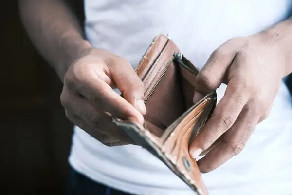
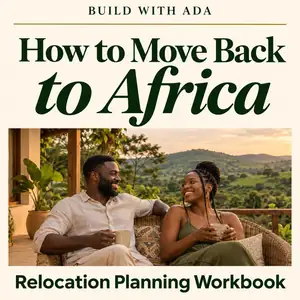

How Much Does It Really Cost to Move Back to Africa?
"How much money do I need to move back to Africa?" is the first question almost everyone asks. The honest answer: more than you think, and it depends on choices only you can make. This guide shows you every cost to plan for, so you can work out your own number instead of guessing.
Why most people underestimate the cost
Most people in the diaspora build their budget from memory: the prices from their last visit, a cousin's rent, or a video of someone living "like a king" on a small budget. Then they land and find out that rent in the areas returnees like has gone up, imported goods cost more than abroad, and everyday life needs a generator, a water tank and a driver.
From my own experience. I came back to Nigeria after more than 20 years in healthcare in the U.S., and I've built Manna Farms in Aba since. When you plan in one currency and spend in another, prices that looked fine on paper can look very different a few months later. That's why every budget in this guide asks for today's prices, plus a buffer.
Many people also assume the exchange rate will carry them. It helps, but only while your income is still in dollars, pounds, euros or Canadian dollars. The day you start spending savings with no income coming in, the clock starts.
The rule I give everyone: budget from what people who live there today pay, not from what things cost when you visited. Ask three people who live in the exact area you want, not just family.
The four money buckets
Don't think of "the cost of moving" as one number. Split it into four buckets. Each one has a different job, and you should never borrow from one to fill another.
- The move: getting you, your family and your things there.
- The landing: setting up your home and life in the first 90 days.
- The monthly: what it costs to live there every month.
- The safety net: money you don't touch unless something goes wrong.
Bucket 1: The cost of the move itself
- Flights for everyone, one-way or with a flexible return, plus extra luggage fees.
- Shipping: a container, shared container or air freight. Get at least three quotes, and ask what customs duty and clearing fees will cost on arrival. Those fees often surprise people.
- Selling or storing what you leave behind: a car, furniture, a storage unit.
- Ending your life abroad: lease-break fees, cancelling contracts, final bills.
- Papers: passport renewals, national ID, residency or visa fees, document certification.
- Pets: vet checks, permits and travel crates, if you're bringing them.
Ask yourself honestly: do you need to ship everything? Many returnees say they shipped things they could have bought locally, and paid more in duty than the items were worth.
Bucket 2: Your first 90 days
This is the bucket people forget. Setting up a home costs far more than living in one.
- Rent paid upfront. In many African cities landlords ask for one or two years' rent in advance, sometimes more. Find out what's normal in your city before you budget.
- Agent and legal fees for the rental.
- Making the house liveable: backup power (solar, inverter or generator), water tank or borehole, security, air conditioning, furniture and appliances.
- A car or transport for the first months.
- Short-stay accommodation while you search, because finding the right place takes longer than you think.
- School registration fees, uniforms and books if you have children.
- Internet and phone setup, especially if you work online.
Bucket 3: Your monthly cost of living
Write down every line below for the exact area you plan to live in. Don't use a country average: life in a gated estate in Lagos, Accra or Nairobi costs very differently from life in a smaller town.
- Rent (or the monthly share of rent paid upfront)
- Fuel for the generator and power bills
- Water
- Food: local food and the imported items you won't give up
- Transport: fuel, a driver, ride-hailing
- School fees
- Health insurance and medication
- Internet and phone
- Household help and security
- Family and community support (yes, put this in the budget)
- Flights back abroad to see family, renew papers or work
Want real numbers to start from? The free Cost of Living in Africa calculator shows monthly costs in 16 cities across 8 countries, the capital and the calmer city side by side.
A nurse's note on health costs. Health is where a "cheap" country can get expensive fast. Price private health insurance before you move, find out where you'd go in an emergency, and check what your regular medication costs locally and whether you can trust the supply.
Bucket 4: Your safety net
- Keep at least 12 months of living costs in savings, separate from any business or building money.
- Keep a "ticket back" fund: enough to return abroad and restart if you need to.
- Keep some savings in a strong currency, outside the country, so a sudden drop in the local currency doesn't wipe you out.
The hidden costs nobody posts about
- The "returnee price." Sellers and landlords may quote you more once they hear your accent.
- Family requests. School fees, hospital bills, weddings and funerals. Decide your limit before you land.
- Things that break. Heat, dust and power surges are hard on electronics and cars.
- Paying twice. Projects that go wrong because no one checked the work. (My guide Moving Back to Africa: The 2026 Checklist covers how to avoid this.)
- Inflation. In some countries prices rise fast. Add a buffer to every line.

How to work out your own number
- Pick the exact city and area you want to live in.
- Fill in Bucket 3 using today's prices from three people who live there.
- Multiply your monthly cost by 12. That's the minimum for Bucket 4.
- Get real quotes for Buckets 1 and 2.
- Add the four buckets together, then add 15–20% for surprises.
- Finally, compare your monthly cost with the income you'll have after you move. If the income doesn't cover it, the plan isn't ready yet, however big your savings are.

Do the maths with the worksheets. My workbook, How to Move Back to Africa, includes the monthly budget worksheet, the moving-cost checklist and the income plan, so you finish with your real number, not a guess. It's $37. Not sure where you stand yet? Take the free readiness quiz first.
Common questions
- How much money do I need to move back to Africa?
- It depends on the city, your family and your income, so there is no single number. Plan for four buckets: the cost of the move, your first 90 days, your monthly living costs, and a safety net of at least 12 months of living costs plus a fund to return abroad if you need to.
- Is it cheaper to live in Africa than in the US, UK or Canada?
- Some things are cheaper, such as local food and household help. Others can cost more, such as imported goods, private schools, backup power, cars and private health care. Rents in areas popular with returnees can be high and are often paid one or two years upfront.
- Can I move to Africa with no money?
- It is very risky. Without savings or income that continues after you move, any emergency can force you back abroad. Build an income that works from Africa and a 12-month safety net first.
- Should I ship my things or buy them there?
- Get shipping quotes that include customs duty and clearing fees, then compare them with local prices. Many returnees find it is cheaper to ship only what matters most and buy the rest locally.
This guide is general information, not financial, tax or immigration advice. Prices and rules change, so check current costs locally before you decide.